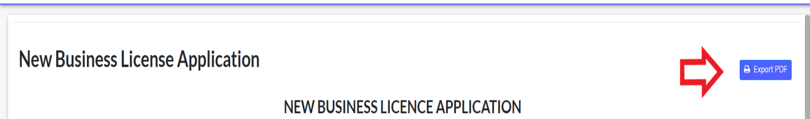

Export form as PDF
This feature enables users to export forms with submitted data as a PDF from the UI. Users will have an “Export PDF ” button in form view pages to click and get the form downloaded as a PDF in the browser itself.


API Details
API URL :
<form-flow-webapi-server>/form/<form-id>/submission/<submission-id>/export/pdf
Optional params:
timezone: A parameter to render form based on client timezone or any custom timezone.
Eg: <form-flow-webapi-server>/form/<form-id>/submission/<submission-id>/export/pdf?timezone=Asia/Calcutta.
API Method: GET
API Response: Will be a blob response that can be used by the client to save it as a PDF.
This feature requires the following prerequisites for running in local without Docker.
- A Chrome installation and its driver are required to render this form and print it as a PDF in headless mode on the server side.
Chrome driver path can be provided via env variable like below:
In windows,
CHROME_DRIVER_PATH=C:\driver\chromedriver.exe
In Linux,
CHROME_DRIVER_PATH=/usr/local/bin/chromedriver.
If not given, the default value will be /usr/local/bin/chromedriver.
Installation of Chrome and chrome driver
Forms flow docker images already contain code to install the latest Chrome and its ChromeDriver as shown below:
- Dockerfile
# Install Chrome WebDriver
RUN CHROMEDRIVER_VERSION=`curl -sS chromedriver.storage.googleapis.com/LATEST_RELEASE` && \
mkdir -p /opt/chromedriver-$CHROMEDRIVER_VERSION && \
curl -sS -o /tmp/chromedriver_linux64.zip http://chromedriver.storage.googleapis.com/$CHROMEDRIVER_VERSION/chromedriver_linux64.zip && \
unzip -qq /tmp/chromedriver_linux64.zip -d /opt/chromedriver-$CHROMEDRIVER_VERSION && \
rm /tmp/chromedriver_linux64.zip && \
chmod +x /opt/chromedriver-$CHROMEDRIVER_VERSION/chromedriver && \
ln -fs /opt/chromedriver-$CHROMEDRIVER_VERSION/chromedriver /usr/local/bin/chromedriver
# Install Google Chrome
RUN curl -sS -o - https://dl-ssl.google.com/linux/linux_signing_key.pub | apt-key add - && \
echo "deb http://dl.google.com/linux/chrome/deb/ stable main" >> /etc/apt/sources.list.d/google-chrome.list && \
apt-get -yqq update && \
apt-get -yqq install google-chrome-stable && \
rm -rf /var/lib/apt/lists/*
# set display port to avoid crash
ENV DISPLAY=:99
# To enable export feature in UI
REACT_APP_EXPORT_PDF_ENABLED=true
# Url of python document service url
REACT_APP_DOCUMENT_SERVICE_URL=<yourIP:port>